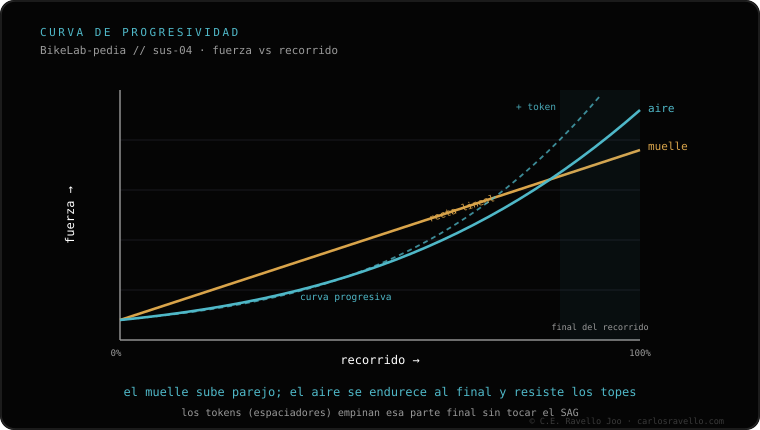

La curva es cómo crece la resistencia al hundirse: el aire es progresivo (se endurece hacia el final) y el muelle es lineal (sube parejo). Los tokens reducen el volumen de la cámara positiva y curvan el final, sin endurecer el inicio ni cambiar el SAG. Más peso o golpes grandes = más progresividad. Profundiza en aire vs muelle y en cuántos tokens poner.
Si haces tope seguido o sientes la suspensión "muerta" al final, no es la presión: es la forma de la curva. Entenderla te dice si cambiar tokens, sistema o dureza.
Un resorte de aire se comprime y, al reducir su volumen, cada milímetro extra cuesta más. Eso hace que la curva suba hacia el final: la suspensión es sensible al inicio y se vuelve firme al fondo, lo que ayuda a no hacer tope en golpes grandes. Por eso el aire es el rey en horquillas y muchos amortiguadores trail/enduro.
Un muelle metálico (coil) da una resistencia que sube de forma pareja con el recorrido: la curva es casi una línea recta. Eso se traduce en una sensibilidad y tracción muy constantes, pero si la dureza no está bien elegida puede llegar al fondo antes. El muelle se afina sobre todo eligiendo bien el spring rate.
Los tokens o volume spacers se meten en la cámara positiva de aire y le quitan volumen. Resultado: el final del recorrido se vuelve más progresivo y cuesta más hacer tope. Lo importante: no endurecen el inicio ni cambian el SAG, solo modifican el tramo final.

Si con el SAG correcto haces tope en golpes grandes, no subas presión (perderías sensibilidad): añade un token para curvar el final. Si en cambio sientes la suspensión áspera y poco sensible al inicio, vas con demasiada progresividad: quita un token o valora un muelle. Y si dudas entre sistema de aire o coil, ahí entra cómo calcular la dureza del muelle.
Dinos tu peso, recorrido y terreno y te recomendamos la curva: presión, tokens o spring rate. Escríbenos por WhatsApp
El aire es progresivo (se endurece al final); el muelle es lineal (resistencia pareja, más sensible y constante).
Reducen el volumen de la cámara positiva y curvan el final. No endurecen el inicio ni cambian el SAG.
Más peso y golpes grandes piden más progresividad; riders ligeros o terreno suave, curvas más lineales.